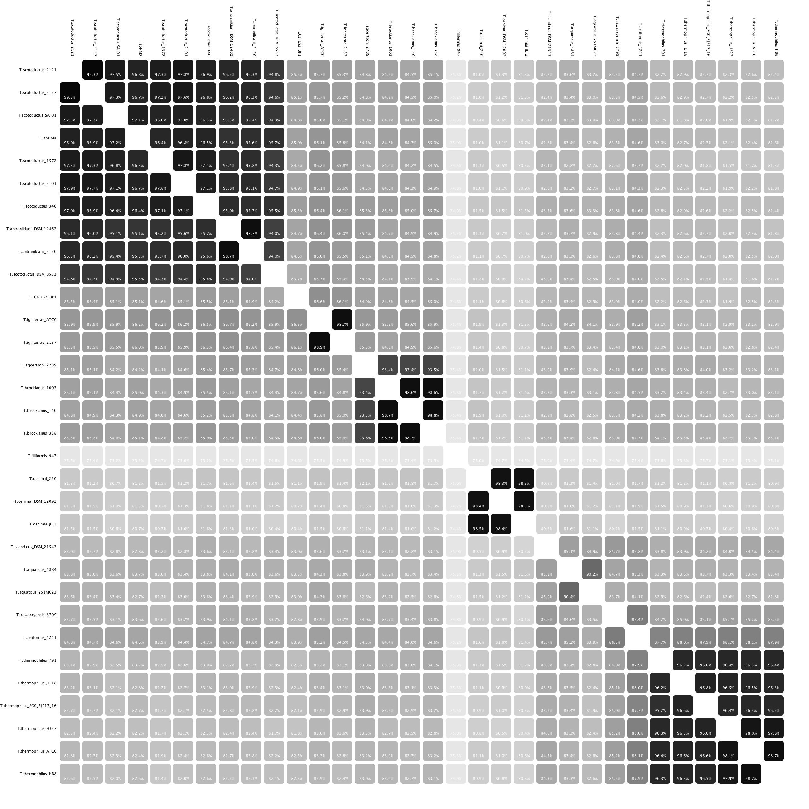

Sigmar Karl Stefánsson1,2, Snædís Björnsdóttir1,2, Ólafur H. Friðjónsson1, Sólveig Pétursdóttir1, Guðmundur Ó. Hreggviðsson1,2
1 Matís ltd. Vínlandsleið 12, 113 Reykjavík, Iceland; 2 Faculty of Life and Environmental Sciences, University of Iceland, Sturlugata 7, 101 Reykjavík Iceland
Horizontal gene transfer is a major force of bacterial evolution.
We have performed extensive comparative genomic analysis of thermophilic bacteria that belong to the genus Thermus.
These bacteria are very effective in DNA uptake and genetic elements such as plasmids, transposons and prophages were found at many of the numerous shuffling sites within their genomes.
Genome rearrangements were examined using a new software which identifies orthologs and uses both paralog clustering and novel visualization techniques to extract information from massive sequence data.
The software identifies the most likely order of contigs of assembled sequences and predicts genetic islands using conventional methods and genome comparison.
Analyses of synteny and gene presence-absence as well as of the convergent evolution of duplicated genes are used for the construction of genome phylogenies.
Gene loss and gene gain are estimated on the basis of observed geographical and environmental patterns in the phylogeny of individual genes.
Metabolic mapping in the context of multiple genomes give the gene sets required for core cellular functions and potentially a deeper insight into the impact of slight genome differences.
The software is written in Java and is downloadable as such. It also has a web interface with public and private access. Our results from genome comparison within the genus Thermus exemplify how genome rearrangement occur in nature.
Main screen
The main screen is split into two tables, the above gene table and the below function table.
The tables are linked and double-clicking on an entry highlights the corresponding row in the other table.
A search textbox accompanies both tables for easy search and filtering.
The sequence editor supports different color coding, multiple sequence alignment and the generation of phylogenetic trees
Genetic islands
The gene permutation atlas is used to view sharing of genes between strains.
The core genome has been removed and the genes are ordered according to the size of each permutation group.
The image to the right shows that the largest group of unique genes within the genus Thermus is observed in Thermus filiformis.
The largest group of genes shared between more than one strain is a prophage found in Thermus brockianus and "Thermus eggertssonii".
The synteny colors shows the relative gene locations.
The image to the left shows the same genes in their correct order for each species, which reveals genetic islands as lanes in the circle.
Comparative genomics
The software generates basic comparative genome statistics such as a pan-core graphs, COG-groups and genome size column plots.
Synteny gradients
The synteny gradient colors are used to visualize genome rearrangements.
Plassmids are shown in grayscale.
The starting point is on the right (blue) indicating the ori.
The image to the left shows each contig as intact lanes, where uniform synteny color indicates that the order of the genes is preserved between the two strains.
The image to the right shows four Thermus thermophilus genomes and three genomes from other Thermus species.
The inverted areas could reveal errors in the published genomes. The smaller case (shown with an arrow) shows a region flanked by 23S region on both sides.
Phylogeny

Multiple genes within and between genomes are compared using phylogenetic methods such as sequence concatenation and majority rule consensus.
Gene duplication sites are used to support the prediction for rooting phylogenetic trees.
The ANI matrix shows the average nucleotide identity between all species in a phylogenetic order.
The ANI matrix shows that bacterial species are not always clearly defined.
An ANI value of 90% was calculated for two strains of Thermus aquaticus
while ANI values of at least 95% were calculated for strains that belonged to Thermus antranikianii and Thermus scotoductus.